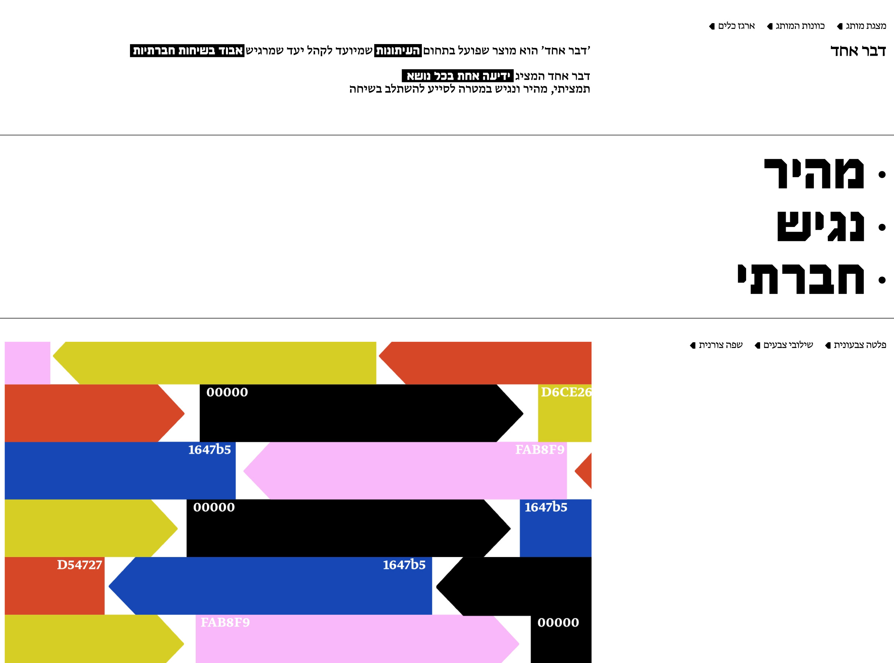
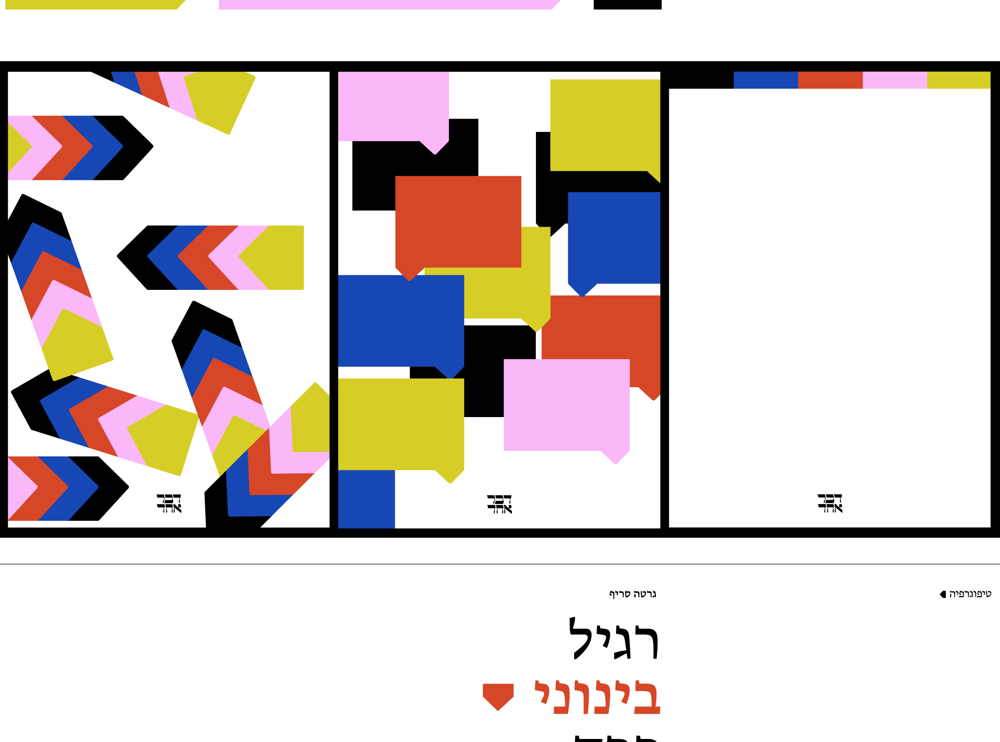
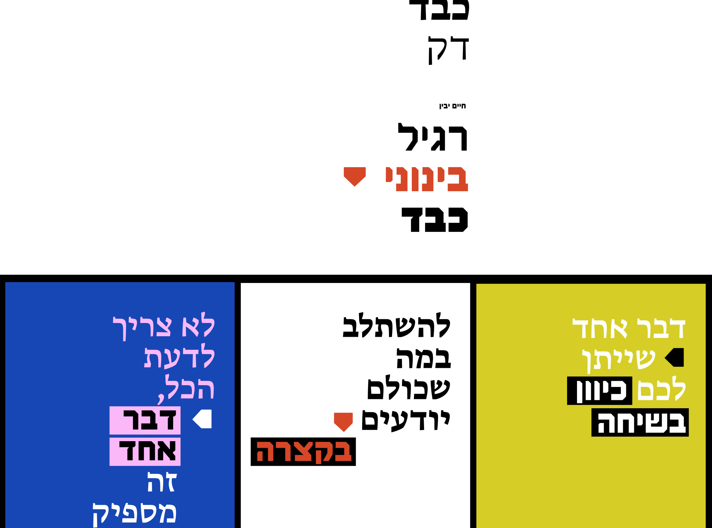
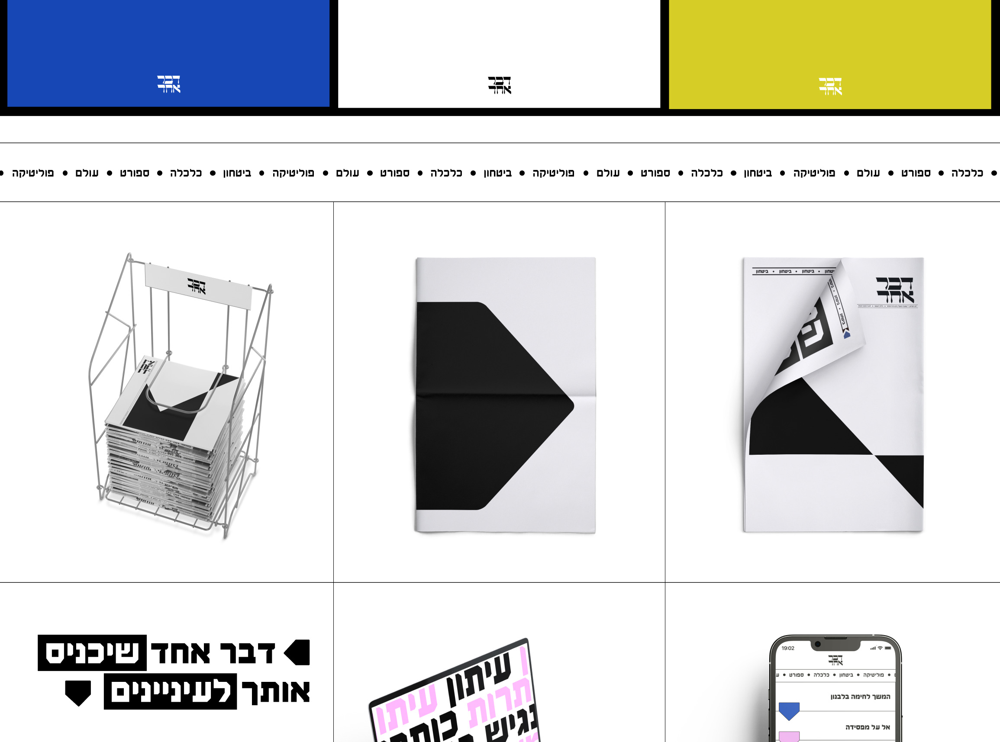
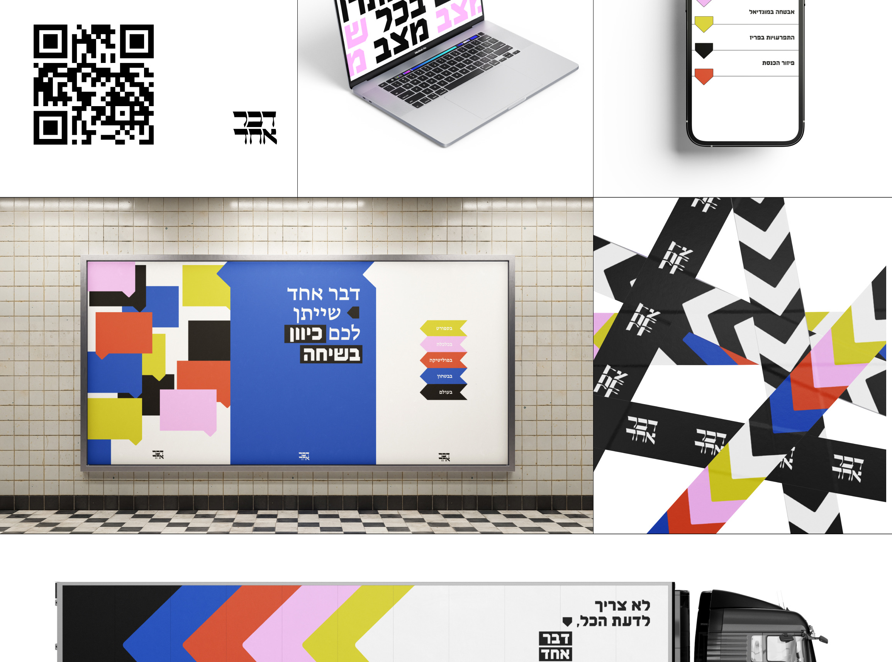
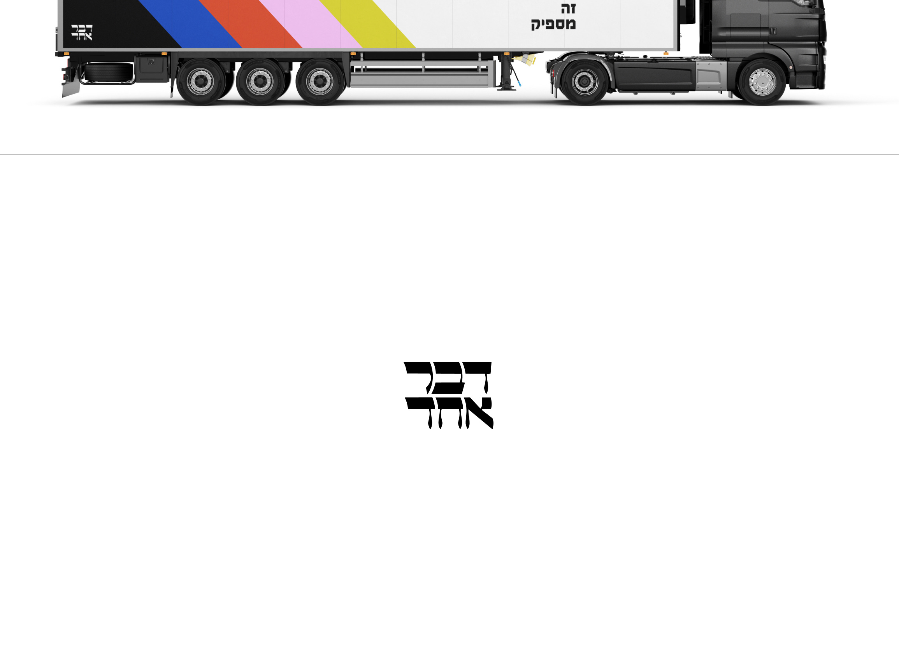
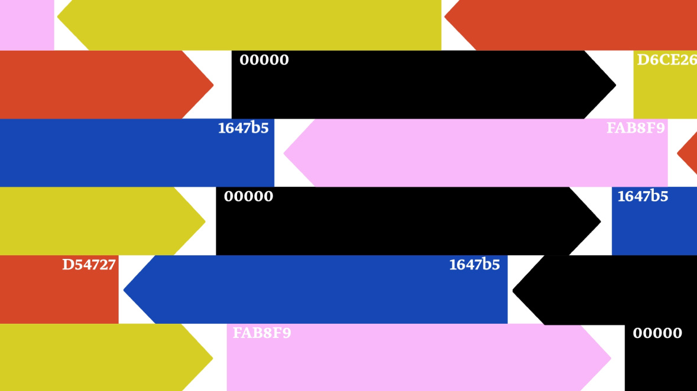
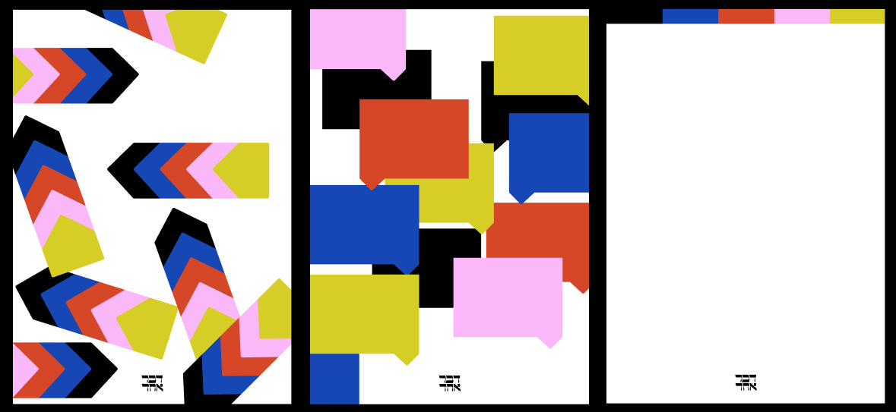
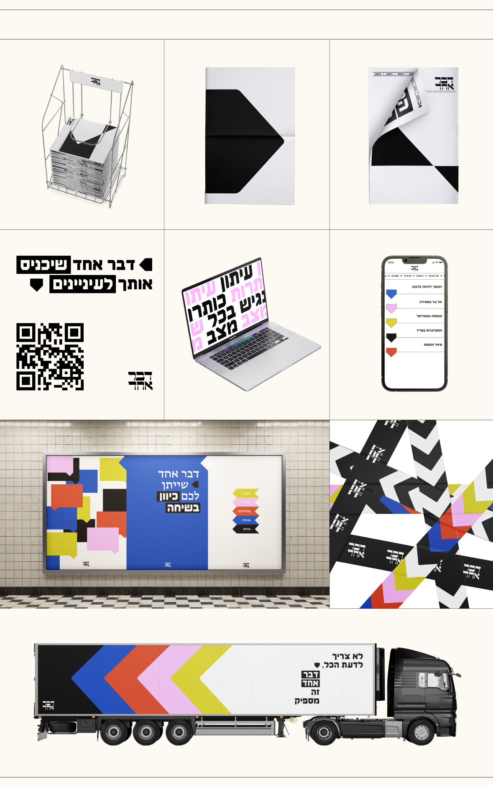

davar echad
branding
student project
2026
Rebranding the historic Israeli workers’ newspaper ‘Davar’.
Davar Echad is a contemporary news rebrand designed to make current events more accessible and less overwhelming. By curating one key headline from each major news category, the brand delivers quick, digestible updates that help people stay informed, feel connected, and confidently join everyday conversations.
brand values:


